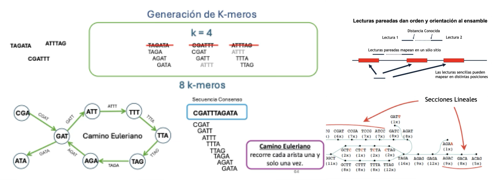

02.Ensambles
01. Ensamble de las secuencias
Teniendo las secuencias limpias, ya se puede realizar el ensamble.
Ensamblaremos con MetaSPAdes y Megahit, después compararemos ambos ensambles basándonos en longitudes de los contigs con QUAST y el porcentaje de lecturas que dan lugar al coensamble, esto con bbmap de bbtools.
Los ensambladores de metagenomas que actualmente se utilizan funcionan mediante la generación de gráficos de Bruijin:

Activemos el ambiente en donde se encuentran instalados los ensambladores
conda activate 03-genomes01.1 Versión 01 de ensamble
Vamos a crear el directorio de resultados
mkdir -p results/04.megahit/9hAhora si, vamos a ensamblar las lecturas usando el tamaño e incrementos de k-mers automáticos, esta será nuestra primer versión
nohup megahit -t 4 --min-contig-len 1000 \
--out-prefix megahit9hv1
-1 data/9hrs_sm_R1.fastq \
-2 data/9hrs_sm_R2.fastq \
-o results/04.megahit/9h/v1 > outs/04.megahit_v1.nohup &¿Cuántos contigs hay?
¿Qué longitud tienen?
1) grep -c
- infoseq -auto -nocolumns -delimiter ‘\t’ -only -noheading -name -length results/04.megahit/9h/v1/megahit9hv1.contigs.fa | sort -k2n | cut -f2 | sort | uniq -c | sort -k2n | less
01.2 Versión 02 de ensamble
Ahora vamos a generar una segunda versión con megahit, cambiando el tamaño y pasos de k-mers
nohup megahit -t 4 --min-contig-len 1000 \
--presets meta-sensitive --out-prefix megahit9hv2 \
-1 data/9hrs_sm_R1.fastq \
-2 data/9hrs_sm_R2.fastq \
-o results/04.megahit/9h/v2 > outs/04.megahit_v2.nohup &01.3 Versión 03 de ensamble
Vamos a correr otra versión de ensamble, esta vez con metaSPAdes
Creamos el directorio de resultados:
mkdir -p results/05.metaspades/9hnohup metaspades.py -t 6 \
-1 data/9hrs_sm_R1.fastq \
-2 data/9hrs_sm_R2.fastq \
-o results/05.metaspades/9h > outs/05.metaspades.nohup &Remover contigs que sean menores a 1000 pb para que sea comparable con los ensambles de megahit
Copia el script de filtrado que se encuentra en el siguiente directorio:
cp /home/alumno21/Metagenoma_pozol_respaldo/scr/filter_contig_lengthSP.py .Entra al directorio de resultados de metaSPAdes
cd results/05.metaspades/9h/python ../../../scr/filter_contig_length_sp.py 1000 1 scaffolds.fastaLista el contenido del directorio y notarás que el ensamble ya filtrado se llama: scaffolds.fltr.fasta
Comparemos el número de contigs que había antes y después de filtrar.
grep -c '>' scaffolds.fasta
grep -c '>' scaffolds.fltr.fasta ¿Cuántos contigs fueron más cortos que 1000 pb?
Regresemos a nuestro directorio principal
cd && cd Metagenoma_pozol_parte102. Comparación de ensambles
02.1 Mapeo de las lecturas
Se usara bbtools para mapear las secuencias ensambladas.
Vamos a crear el directorio que albergará los resultados de profundidad
mkdir -p results/06.compare/9h/Vamos a mapear todos los ensambles que obtuvimos a las lecturas limpias
# version 01 megahit
nohup bbmap.sh ref=results/04.megahit/9h/v1/megahit9hv1.contigs.fa in=data/9hrs_sm_R1.fastq in2=data/9hrs_sm_R2.fastq threads=10 scafstats=results/06.compare/9h/megahit9hv1.scafstats > outs/06.bbmapv1mh.nohup &# version 02 megahit
nohup bbmap.sh ref=results/04.megahit/9h/v2/megahit9hv2.contigs.fa in=data/9hrs_sm_R1.fastq in2=data/9hrs_sm_R2.fastq threads=10 scafstats=results/06.compare/9h/megahit9hv2.scafstats > outs/06.bbmapv2mh.nohup &# version 01 metaspades
nohup bbmap.sh ref=results/05.metaspades/9h/scaffolds.fltr.fasta in=data/9hrs_sm_R1.fastq in2=data/9hrs_sm_R2.fastq threads=10 scafstats=results/06.compare/9h/metaspadesv1.scafstats > outs/06.bbmapv2sp.nohup &Vamos a explorar cuantas lecturas se mapearon en cada uno de los ensambles
for file in $(ls results/06.compare/); do
echo "El número de lecturas mapeadas al ensamble: " $file "es: "
cut -f8 results/06.compare/$file | grep -v assignedReads | awk '{sum += $1;}END{print sum;}'
doneBien, ahora ya sabemos que ensamble se formó con una mayor cantidad de lecturas, sin embargo, ahora nos falta conocer que ensamble tiene una mayor longitud de contigs.
¿Qué porcentaje de las lecturas se mapearon en todos los casos?
¿Qué pasó con las lecturas que no mapearon al ensamble?
02.2 Longitud de los contigs
Por último, se utilizará Quast para revisar la longitud que tienen nuestros contigs después del ensamble
python /home/mvazquez/Documents/2025_taller/taller_amplicones_pozol/quast-5.2.0/quast.py -o results/06.compare/9h/metaquast results/04.megahit/9h/v1/megahit9hv1.contigs.fa results/04.megahit/9h/v2/megahit9hv2.contigs.fa results/05.metaspades/9h/scaffolds.fltr.fastaObservemos la ayuda de metaquast para que veamos todo el potencial de esta herramienta
python /home/mvazquez/Documents/2025_taller/taller_amplicones_pozol/quast-5.2.0/quast.py --help¿Qué ensamble es el mejor?
¿Porqué seleccionarlo?
¿Qué importancia tiene probar diferentes pasos y tamaños de k-mers y diferentes ensambladores?
Les toca ensamblar la muestra del tiempo de fermentación que les tocó. En equipo discutan y sólo uno corra el escript mientras los demás le ayudan a poner las instrucciones, discutan los resultados y preparen una diapositiva para que la presenten.